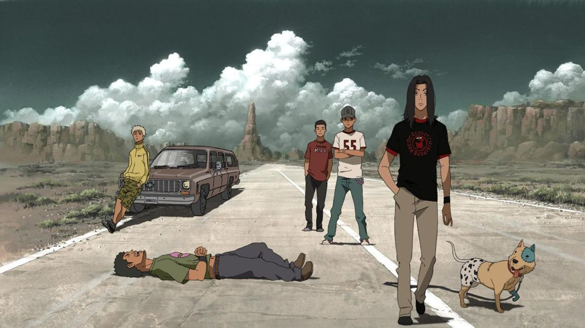
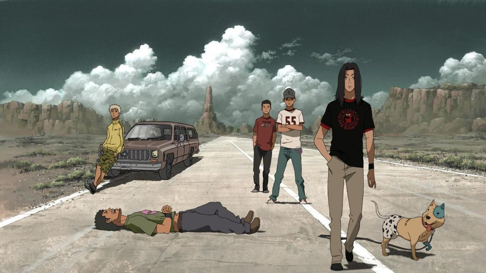

Drive It All Over Me
人生でかけがえのないものは、失って初めてそのありがたみに気づくものだ。夏休みとか…兄弟とか。
人生でかけがえのないものは、失って初めてそのありがたみに気づくものだ。夏休みとか…兄弟とか。
Loveless is the definitive shoegaze masterpiece, defined by Kevin Shields' "glide guitar" technique and walls of shimmering distortion.
Emerging from the Dublin and London indie scenes, primarily recorded across 19 different studios to achieve its ethereal sound.
The cost was nearly legendary—Creation Records reportedly spent over £250,000, almost bankrupting the label in the process!